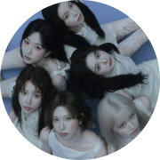
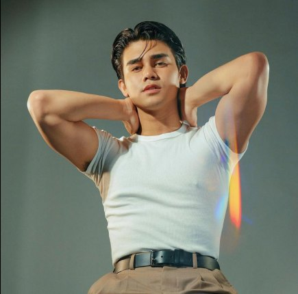

K-Pop Viral Music Video
- Aurora
- Curators
Selected voices
Work before a label.
Aurora’s curator programme connects a person’s perspective with their actual creative practice. Explore the people and perspectives featured in Aurora’s editorial world.
큐레이터는 직함이 아니라 작업으로 소개합니다.



K-Pop Global Rising StarNMIXX
The new vanguard of K-pop innovation. Formed under JYP Entertainment, this powerhouse girl group has redefined pop with their signature “MIXX POP”.
Start CollaborationInternational Recognition
NMIXX Shares Their Favorite Song to Perform & More | Fishing for Answers | Billboard

Brand Collaboration
GUESS × NMIXX
Curated picks arrive with the first release
Objects chosen by this curator appear here once a collaboration is agreed and the product is approved for sale.
See Curator’s Recommendation in ShopTalk about the work in Aurora Lounge
Share a discovery or ask a thoughtful question in the Entertainment topic.
Open Community topicsProfile study from the original Figma design. A featured profile does not by itself establish a Curator appointment, a product recommendation or a collaboration.


Aurora 100 · Icons · Screen & culture
Rashmika Mandanna
Aurora 100 looks at established cultural influence through the people, work and ideas behind recognition.
Explore a person-led perspective on screen, culture and creative expression — from Indian cinema to a growing presence across Korea and Hollywood.
Source profile study. This presentation does not announce selection, appointment, endorsement or artist participation.
People & perspectives
Explore more perspectives
Explore the people and perspectives featured in Aurora’s editorial world. Editorial features are distinct from commissioned collaborations.

Aurora 100
Rashmika Mandanna

Global Faces 100
Harshaali Malhotra

Music
Tyla

Fashion × Music
Lisa

Music
Felix
Film
Zendaya
Music
Jackson Wang

Film
Alia Bhatt

Entertainment
Iñigo Pascual

Thailand
Mike Angelo

Japan
Mackenyu
K-Pop
NMIXX
Our approach
Selected voices, real practice.
An editorial appearance does not automatically confer a curator role. We look at what a person makes, and what it offers to others.
Perspective
A distinct way of seeing
We look for care, cultural understanding and a practice that offers something meaningful to others.
Practice
Ideas made tangible
Profiles connect a curator’s work with approved stories, projects and selected collaborations.
Connection
Stories into objects
When a collaboration is agreed, a curator’s picks can reach the Shop — always with the story behind them. Discuss a collaboration